pacman::p_load(sf, spatstat, sparr, tidyverse, lubridate, knitr, kableExtra)Take-home Exercise 1: Spatio-temporal Analysis of Road Traffic Accidents
First-order and second-order spatial point pattern analysis of 2022 accidents in the Bangkok Metropolitan Region
1 Overview
Hands-on Exercise 3 covered spatial point pattern analysis (KDE, Clark-Evans, G/F/K/L functions) on a single static point set. This take-home exercise reuses that whole toolkit on a real dataset — road traffic accidents in Thailand — but adds a dimension Ex03 didn’t touch: time. The dataset carries a full timestamp per accident (incident_datetime), so on top of “where do accidents cluster” I can also ask “does where they cluster change depending on when” — day vs. night, weekday vs. weekend.
The brief has three required parts plus one open-ended one:
- First-order analysis — kernel density estimation (KDE) to map accident hotspots across the study area.
- Second-order analysis — G, F, K and L functions with Monte Carlo envelopes to test whether the clustering is statistically real (i.e. not what we’d expect under complete spatial randomness, CSR).
- Spatio-temporal analysis — the dedicated technique here is spatio-temporal KDE (STKDE) via the
sparrpackage, the method taught in Chapter 6 of the course’s R4GDSA reference (that chapter demonstrates it on Indonesian forest-fire data; here it’s applied to accidents). On top of that I also split the pattern into discrete time periods (day/night, weekday/weekend) and run a formal Monte Carlo test for whether the spatial pattern itself differs across those splits. - Value-added analysis — my own extension, using one of the extra attribute columns the dataset provides (
weather_condition,vehicle_type,presumed_cause) to dig one level deeper.
Study area and scope. The raw CSV covers the whole of Thailand from 2019–2022. The assignment only asks for the Bangkok Metropolitan Region (BMR) — Bangkok plus the five surrounding provinces (Nonthaburi, Pathum Thani, Samut Prakan, Nakhon Pathom, Samut Sakhon) that are conventionally grouped with it — restricted to 2022. Filtering down to that scope is the first thing the data-preparation section below does.
2 Getting Started
2.1 Packages used
- sf: reading/writing vector geospatial data and all the geometric operations (projection, filtering, union).
- spatstat: everything point-pattern —
ppp,owin,density(),envelope(),Gest/Fest/Kest/Lest,clarkevans.test(),segregation.test(). This is the same package Ex03 used. - sparr:
spattemp.density()— spatio-temporal kernel density estimation, the technique from Chapter 6. - tidyverse / lubridate: data wrangling and date-time handling.
- knitr / kableExtra: tidy tables.
Unlike Ex01/Ex02 I’m not loading tmap here — KDE surfaces and the G/F/K/L plots are spatstat objects (im, fv), and spatstat’s own plot() methods are the standard way to look at them (that’s also what the lecture slides do). ggplot2 + sf covers the handful of ordinary vector maps/charts I need elsewhere in this document.
2.2 Data sources
| Dataset | Type | Source |
|---|---|---|
thai_road_accident_2019_2022.csv |
Aspatial (point coordinates as columns) | Kaggle: Thailand Road Accident 2019–2022 |
| Thailand ADM1 (province) boundaries | Geospatial (polygon) | geoBoundaries — geoBoundaries-THA-ADM1 |
list.files("data/geospatial")[1] "tha_adm1.geojson"list.files("data/aspatial")[1] "thai_road_accident_2019_2022.csv" "thai_road_accident_2019_2022.csv.gz"3 Importing and Preparing the Data
3.1 Geospatial: the Bangkok Metropolitan Region boundary
The accident CSV has no polygon layer of its own — it’s just latitude/longitude per row — so I need an administrative boundary from elsewhere to (a) define the BMR study area and clip out-of-scope points, and (b) give spatstat an observation window (owin) to compute intensity and edge corrections against. I used geoBoundaries’ Thailand province-level (ADM1) layer.
adm1 <- st_read("data/geospatial/tha_adm1.geojson", quiet = TRUE)
st_crs(adm1)$input[1] "WGS 84"nrow(adm1)[1] 7777 provinces nationwide, in WGS84 (EPSG:4326). BMR isn’t an official administrative unit in this file — it’s Bangkok plus five neighbouring provinces that get treated as one metro area by convention — so I filter by name:
bmr_names <- c("Bangkok", "Nonthaburi Province", "Pathum Thani Province",
"Samut Prakan Province", "Nakhon Pathom Province", "Samut Sakhon Province")
bmr <- adm1 |>
filter(shapeName %in% bmr_names) |>
st_transform(32647)
nrow(bmr)[1] 6EPSG:32647 is WGS 84 / UTM zone 47N, which covers central Thailand including Bangkok — a projected CRS with metre units, needed for any distance-based calculation (KDE bandwidths, K-function radii, etc.) later on. Working in degrees would silently distort every one of those.
I also build a single dissolved polygon (bmr_union) — the six provinces merged into one shape with the internal borders removed. This is what becomes the spatstat observation window; point-pattern statistics don’t care about which province a point falls in, only whether it falls inside the window.
bmr_union <- st_union(bmr) |> st_sf() |> st_make_valid()ggplot() +
geom_sf(data = bmr, aes(fill = shapeName), colour = "white", linewidth = 0.3) +
geom_sf(data = bmr_union, fill = NA, colour = "black", linewidth = 0.8) +
labs(fill = "Province") +
theme_minimal()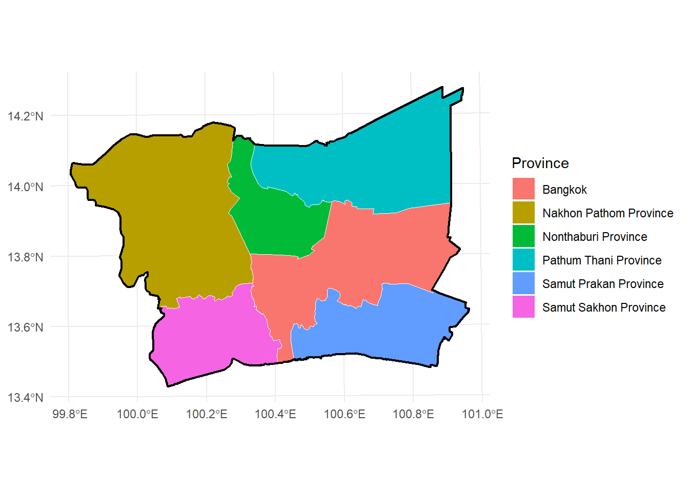
3.2 Aspatial: the accident records
acc <- read_csv(
"data/aspatial/thai_road_accident_2019_2022.csv",
show_col_types = FALSE,
col_types = cols(incident_datetime = col_datetime(format = "%Y-%m-%d %H:%M:%S"))
)
nrow(acc)[1] 81735Gotcha worth flagging: the first time I read this without specifying col_types, read_csv() auto-guessed incident_datetime as a datetime column already — which sounds convenient, but then calling lubridate::ymd_hms() on it (to be safe/explicit) silently failed on 118 rows, because ymd_hms() expects a character string and readr’s auto-parsed POSIXct prints with a UTC suffix and sometimes drops the time part in its internal string form, which doesn’t match the ymd_hms pattern. The fix is to pin the column type explicitly at read time as above (col_datetime(format = "%Y-%m-%d %H:%M:%S")), which then needs no further parsing at all. I only caught this because my BMR/2022 filter count came out 3 rows short of a plain Python/pandas cross-check.
3.3 Filtering to the Bangkok Metropolitan Region, 2022
bmr_provinces_en <- c("Bangkok", "Nonthaburi", "Pathum Thani",
"Samut Prakan", "Nakhon Pathom", "Samut Sakhon")
acc_2022 <- acc |> filter(year(incident_datetime) == 2022)
nrow(acc_2022)[1] 21032acc_bmr_all <- acc_2022 |> filter(province_en %in% bmr_provinces_en)
nrow(acc_bmr_all)[1] 3782sum(is.na(acc_bmr_all$latitude))[1] 18921,032 accidents nationwide in 2022, of which 3,782 are in the six BMR provinces. 189 of those (5%) have no latitude/longitude — I drop them, since a point pattern needs a location for every point:
acc_bmr <- acc_bmr_all |> filter(!is.na(latitude), !is.na(longitude))
nrow(acc_bmr)[1] 35933,593 geolocated accidents is the working dataset for the rest of this exercise.
3.4 Converting to sf, then to spatstat
acc_sf <- st_as_sf(acc_bmr, coords = c("longitude", "latitude"), crs = 4326) |>
st_transform(32647)A handful of points sit just outside the dissolved BMR polygon (coordinates that round to the coastline/river or a boundary sliver) — st_filter() keeps only the ones genuinely inside the window spatstat will use:
acc_sf <- st_filter(acc_sf, bmr_union)
nrow(acc_sf)[1] 35903,590 points make it through. Now the spatstat conversion — an owin from the polygon, then a ppp (planar point pattern) built from the point coordinates against that window:
owin_bmr <- as.owin(st_geometry(bmr_union))
coords <- st_coordinates(acc_sf)
acc_ppp <- ppp(x = coords[, 1], y = coords[, 2], window = owin_bmr)
acc_pppPlanar point pattern: 3590 points
window: polygonal boundary
enclosing rectangle: [587130.4, 712441.7] x [1484748.9, 1579087.2] unitssum(duplicated(acc_ppp))[1] 321321 exact duplicate coordinates — different accidents recorded at the same lat/long to several decimal places, most likely because the source data snapped each report to the nearest intersection or km-marker rather than a precise GPS fix. Exact duplicates aren’t a problem for KDE, but they are a problem for nearest-neighbour statistics (the G function in particular), where a distance of exactly zero between two “different” points is a degenerate case rather than a genuine measurement. The standard fix is rjitter() — nudge every point by a small random offset (I used a 5 m radius, well below anything meaningful at BMR scale) to break exact ties without disturbing the actual spatial pattern:
set.seed(415)
acc_ppp <- rjitter(acc_ppp, retry = TRUE, nsim = 1, radius = 5)
sum(duplicated(acc_ppp))[1] 0I’ll reuse this jittered acc_ppp (and the same jittering logic for every subset built later) throughout the rest of the document.
4 Exploratory Data Analysis
acc_sf |>
st_drop_geometry() |>
count(province_en, sort = TRUE) |>
mutate(pct = round(100 * n / sum(n), 1)) |>
kable(col.names = c("Province", "Accidents", "% of total"),
caption = "2022 BMR accidents by province")| Province | Accidents | % of total |
|---|---|---|
| Bangkok | 1801 | 50.2 |
| Samut Prakan | 669 | 18.6 |
| Pathum Thani | 486 | 13.5 |
| Samut Sakhon | 324 | 9.0 |
| Nonthaburi | 175 | 4.9 |
| Nakhon Pathom | 135 | 3.8 |
Bangkok alone accounts for half of all BMR accidents, unsurprising given it’s the urban core with by far the densest road network and traffic volume; the outer provinces trail off roughly with distance from the centre. Over the whole sample, these accidents recorded 176 fatalities and 2,093 injuries.
ggplot() +
geom_sf(data = bmr, fill = "grey97", colour = "grey70") +
geom_sf(data = acc_sf, aes(colour = province_en), size = 0.4, alpha = 0.5) +
labs(colour = "Province") +
theme_minimal()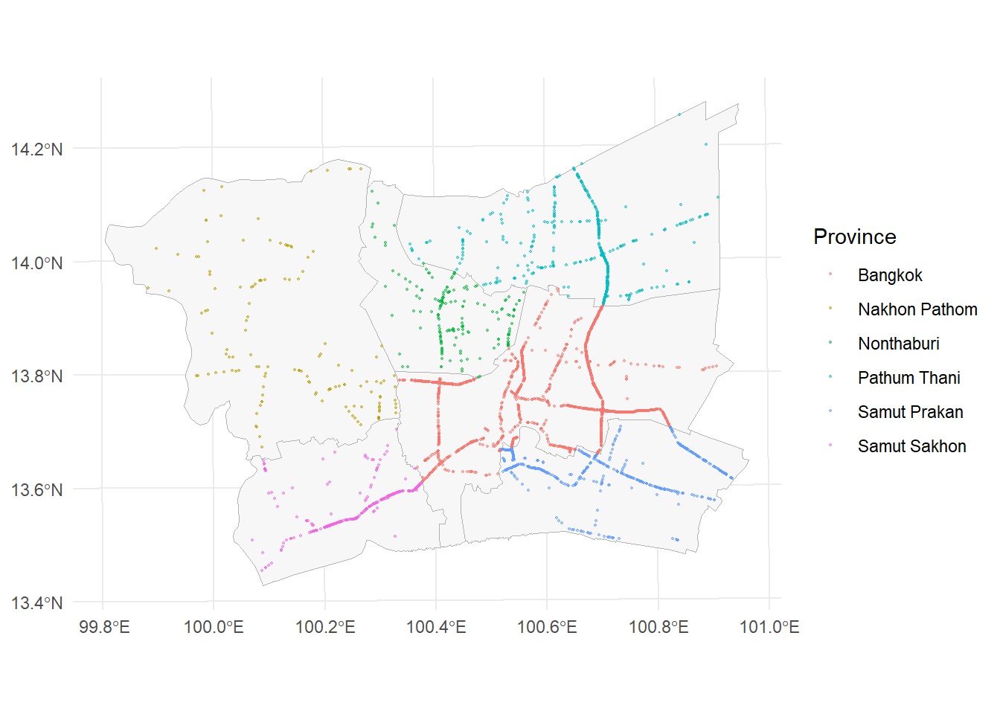
Even at this raw-point stage the pattern is obviously not random — points trace out the road network rather than filling space evenly, which is exactly what the first-order and second-order analyses below go on to quantify.
5 First-Order Spatial Point Pattern Analysis (KDE)
First-order analysis asks: where is accident intensity highest? Kernel density estimation smooths the discrete point pattern into a continuous surface, so instead of 3,590 dots I get a map of “accidents per unit area” that’s readable at a glance.
5.1 Choosing a bandwidth
The bandwidth (sigma) controls how much smoothing happens — too small and the map is just noisy dots with a blur radius, too large and every genuine hotspot gets washed into one diffuse blob. spatstat offers a few automatic selectors; I checked more than one because of the duplicate-point issue above:
bw.diggle(acc_ppp) sigma
69.2306 bw.ppl(acc_ppp) sigma
786.232 bw.diggle() — usually a solid default — comes back at essentially 23 metres, which is far too small to be useful over an area the size of the BMR. That’s the duplicate/near-duplicate points again: bw.diggle() is tuned by minimising a criterion sensitive to the very shortest inter-point distances, so a cluster of points sitting almost on top of each other drags it toward zero. bw.ppl() — Baddeley’s likelihood cross-validation selector, generally recommended over bw.diggle() specifically when the pattern is clustered (Baddeley, Rubak & Turner, Spatial Point Patterns, 2015) — comes back at a much more sensible ~750 m, and gives the same answer whether duplicates are jittered out first or not. I used bw.ppl() throughout.
5.2 Fixed-bandwidth KDE
kde_bmr <- density(acc_ppp, sigma = bw.ppl(acc_ppp), edge = TRUE)
plot(kde_bmr, main = "")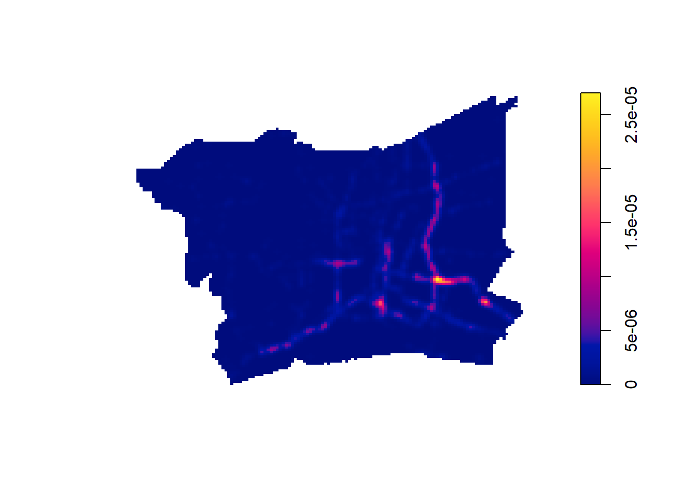
5.3 Adaptive KDE
Fixed-bandwidth KDE uses the same smoothing radius everywhere, which can over-smooth dense urban clusters and under-smooth the sparser outskirts at the same time. Adaptive KDE lets the bandwidth shrink in dense areas and grow in sparse ones:
kde_adaptive <- adaptive.density(acc_ppp, method = "kernel")
plot(kde_adaptive, main = "")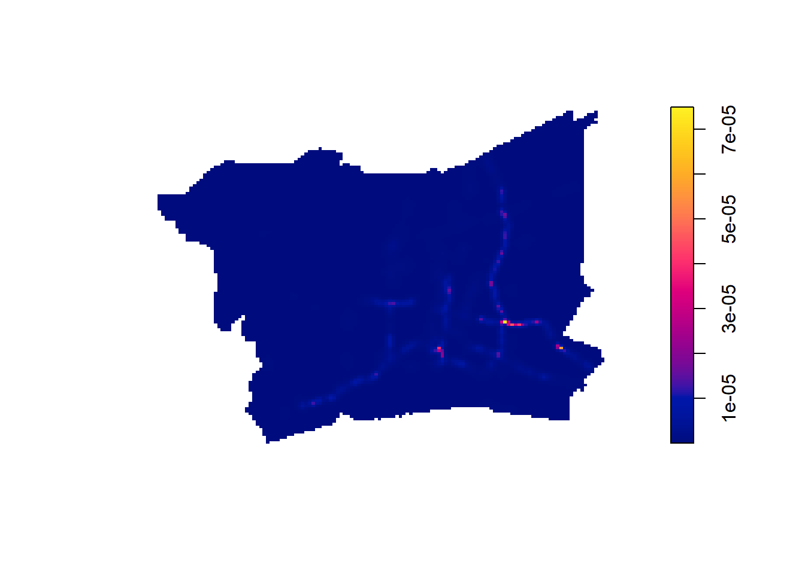
5.4 Interpretation
Both surfaces tell the same basic story, which is reassuring: accident intensity is not spread evenly across the BMR, it traces the expressway/arterial road network, with a small number of sharp point hotspots sitting at major interchanges in central-eastern Bangkok. The adaptive version sharpens those interchange hotspots further (since local point density there pulls its effective bandwidth down), while smoothing the low-density fringe more aggressively than the fixed version does. Neither surface shows any hotspot away from a road corridor, which is a reasonable sanity check — accidents can only happen where vehicles are.
6 Second-Order Spatial Point Pattern Analysis (CSR Testing)
First-order analysis shows where intensity is high, but it doesn’t prove the clustering is statistically real rather than a chance arrangement of otherwise-random points. Second-order analysis tests this directly: compare the observed pattern’s G, F, K and L functions against what complete spatial randomness (CSR — points scattered independently at random, i.e. a homogeneous Poisson process) would produce, using Monte Carlo simulation envelopes.
For all four functions I use nsim = 99 simulated CSR patterns, which gives a 1/(99+1) = 1% two-sided significance level for the envelope test — the standard convention.
set.seed(415)
G_env <- envelope(acc_ppp, Gest, nsim = 99, verbose = FALSE)
F_env <- envelope(acc_ppp, Fest, nsim = 99, verbose = FALSE)
K_env <- envelope(acc_ppp, Kest, correction = "border", nsim = 99, verbose = FALSE)
L_env <- envelope(acc_ppp, Lest, correction = "border", nsim = 99, verbose = FALSE)I fixed correction = "border" for Kest/Lest explicitly — spatstat’s default edge-correction choice (isotropic) is far more expensive to compute on a polygon window this irregular (the BMR outline has 300+ vertices) and, with nsim = 99 simulations to run, the isotropic version didn’t finish in a reasonable time. Border correction is simpler (it just discards the area near the window edge rather than reweighting it) but is a standard, valid choice and doesn’t change the CSR conclusion here.
6.1 G function — nearest-neighbour distances
plot(G_env, main = "")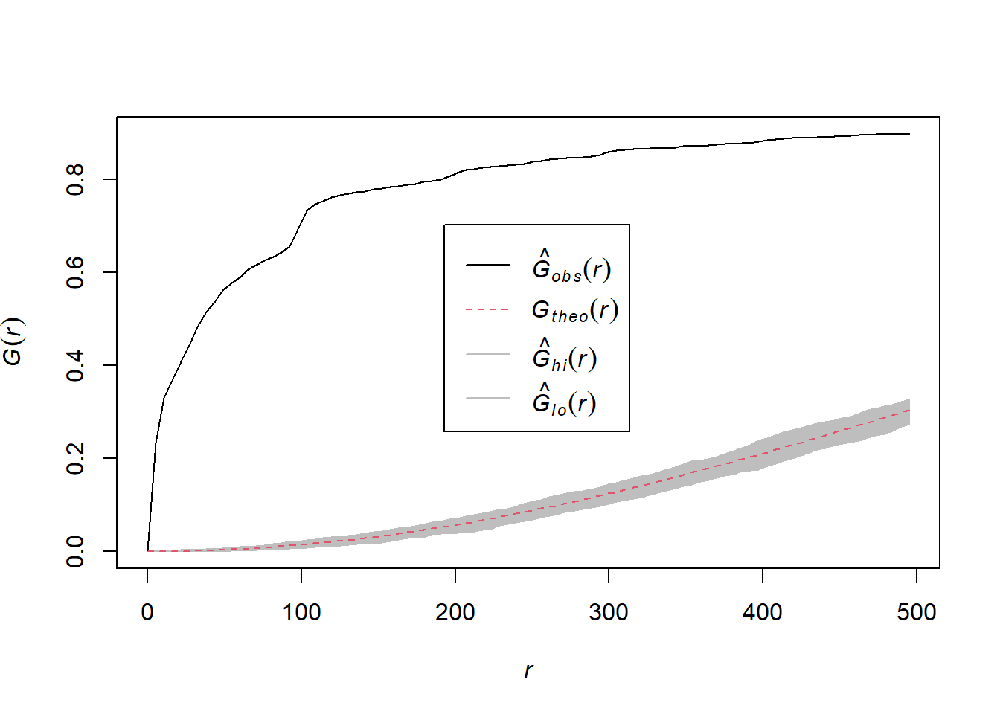
6.2 F function — empty-space function
plot(F_env, main = "")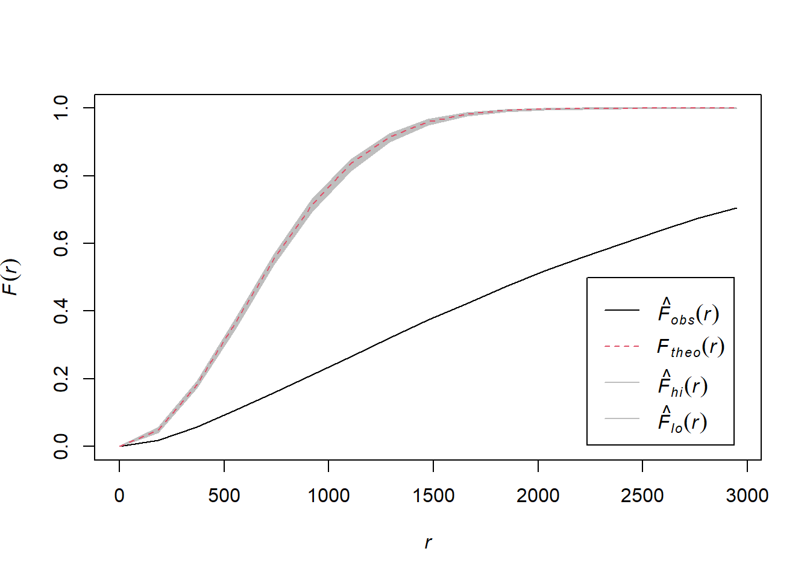
6.3 K function — Ripley’s K
plot(K_env, main = "")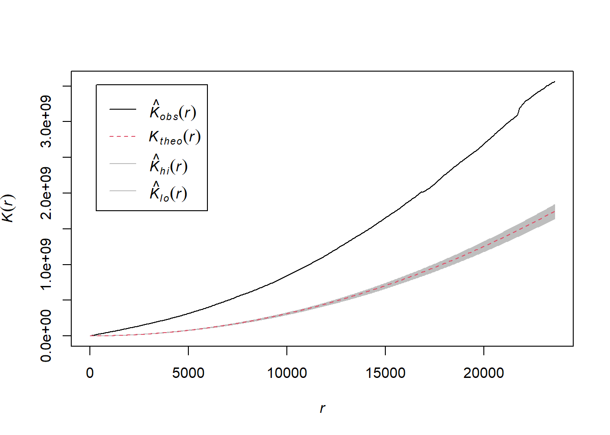
6.4 L function — variance-stabilised K
plot(L_env, . - r ~ r, main = "")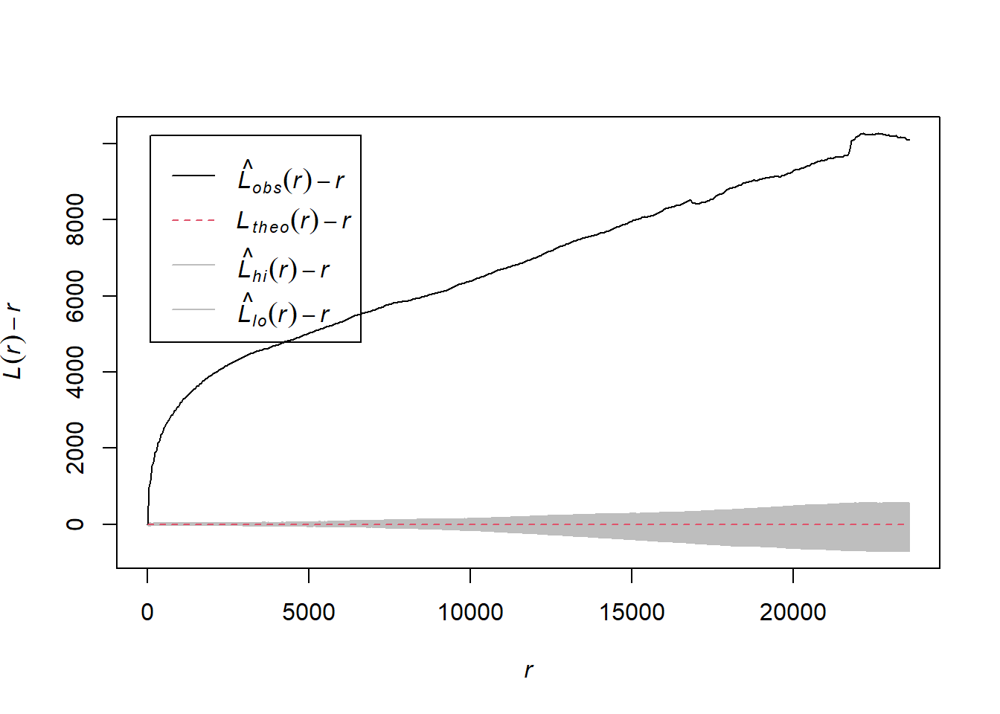
6.5 Clark-Evans test
As a single-number companion to the four envelope plots, the Clark-Evans index compares the mean observed nearest-neighbour distance to the value expected under CSR: R = 1 means CSR, R < 1 means clustering, R > 1 means regularity/dispersion.
clarkevans.test(acc_ppp, correction = "cdf", alternative = "clustered")
Clark-Evans test
CDF correction
Z-test
data: acc_ppp
R = 0.21546, p-value < 2.2e-16
alternative hypothesis: clustered (R < 1)6.6 Interpretation
All four functions agree, and agree with the KDE maps: the observed curve sits outside the simulation envelope in the clustered direction across essentially the whole range tested (G above, F below, K/L above), and the Clark-Evans R statistic of 0.215 — far below 1, p < 2.2 × 10⁻¹⁶ — rejects CSR at any reasonable significance level. In plain terms: 2022 BMR road accidents cluster far more tightly than random chance would produce, and they do so from the very shortest inter-point distances (G function departs from CSR almost immediately) out to the largest radii tested (K/L keep diverging rather than flattening back toward the envelope). That’s consistent with a real underlying cause — accidents are physically constrained to the road network, and further concentrated at high-conflict points like busy intersections — rather than any artefact of the analysis.
7 Spatio-Temporal Analysis
Ex03’s toolkit stops at “is this one point pattern clustered.” The accident data lets me go further: does where accidents cluster change depending on when they happen? incident_datetime gives a continuous time value per point, not just a category, so before cutting it into discrete bins (day/night, weekday/weekend) I first use the technique built for exactly this — spatio-temporal KDE.
7.1 Deriving time attributes
acc_sf <- acc_sf |>
mutate(
hour = hour(incident_datetime),
hour_of_day = hour(incident_datetime) + minute(incident_datetime) / 60,
month_num = month(incident_datetime),
wday_num = wday(incident_datetime, week_start = 1),
period = if_else(hour >= 6 & hour < 18, "Day", "Night"),
daytype = if_else(wday_num <= 5, "Weekday", "Weekend")
)
acc_sf |> st_drop_geometry() |> count(period)# A tibble: 2 × 2
period n
<chr> <int>
1 Day 1938
2 Night 1652acc_sf |> st_drop_geometry() |> count(daytype)# A tibble: 2 × 2
daytype n
<chr> <int>
1 Weekday 2549
2 Weekend 1041hour_of_day (0–24, continuous) and month_num (1–12) feed the STKDE below; period/daytype are the discrete bins used further down for the formal Monte Carlo test. “Day” is 06:00–17:59 and “Night” is 18:00–05:59 — a plain 12h/12h split rather than anything tied to actual sunrise/sunset, a simplification worth naming but reasonable at Bangkok’s latitude where day length barely varies across the year.
7.2 Spatio-temporal KDE (STKDE)
This follows Chapter 6 of the course’s R4GDSA reference directly — that chapter runs sparr::spattemp.density() on forest-fire points with month/day-of-year as the time mark; the same recipe applies here with accident points and hour-of-day/month as the marks. The trick is as.ppp() on an sf object with exactly one numeric column selected: that column becomes the point pattern’s mark, and spattemp.density() reads it as the time dimension, producing a smooth density surface over (x, y, t) jointly rather than one KDE per discrete bin.
7.2.1 By hour of day
acc_hour_ppp <- acc_sf |> select(hour_of_day) |> as.ppp()
acc_hour_owin <- acc_hour_ppp[owin_bmr]
stkde_hour <- spattemp.density(acc_hour_owin)
summary(stkde_hour)Spatiotemporal Kernel Density Estimate
Bandwidths
h = 4882.307 (spatial)
lambda = 0.6049 (temporal)
No. of observations
3590
Spatial bound
Type: polygonal
2D enclosure: [587130.4, 712441.7] x [1484749, 1579087]
Temporal bound
[0, 24]
Evaluation
128 x 128 x 25 trivariate lattice
Density range: [4.269527e-19, 5.665265e-11]spattemp.density() picks its own bandwidths by cross-validation — a spatial one (here ≈ 4,880 m) and a temporal one (here ≈ 0.6 hours) — so I’m not hand-tuning sigma the way I did for the plain KDE earlier.
tims <- c(0, 4, 8, 12, 16, 20)
par(mfcol = c(2, 3))
for (i in tims) {
plot(stkde_hour, i, override.par = FALSE, fix.range = TRUE,
main = paste0("Hour ", i))
}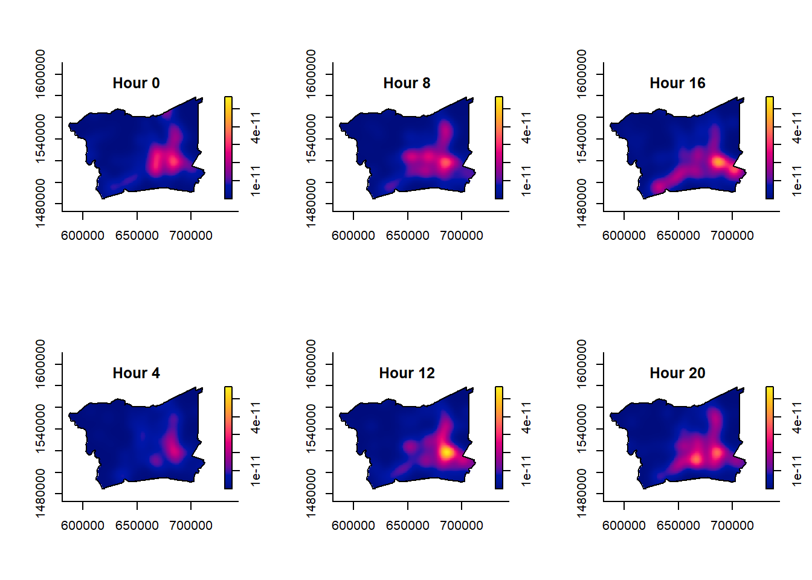
The hotspot doesn’t just dim and brighten in place — it visibly moves. Overnight (hour 0–4) it’s a single tight, isolated peak; by the morning commute (hour 8) it stretches into a corridor with several near-equal sub-peaks; by midday (hour 12) intensity concentrates sharply back into one dominant peak, now shifted slightly from the overnight location; by evening (hour 16–20) it broadens out again into multiple simultaneous hotspots. A single “the” hotspot from the first-order KDE earlier is really an average over a location that’s constantly reshaping through the day.
7.2.2 By month
acc_month_ppp <- acc_sf |> select(month_num) |> as.ppp()
acc_month_owin <- acc_month_ppp[owin_bmr]
stkde_month <- spattemp.density(acc_month_owin)
summary(stkde_month)Spatiotemporal Kernel Density Estimate
Bandwidths
h = 4882.307 (spatial)
lambda = 0.0285 (temporal)
No. of observations
3590
Spatial bound
Type: polygonal
2D enclosure: [587130.4, 712441.7] x [1484749, 1579087]
Temporal bound
[1, 12]
Evaluation
128 x 128 x 12 trivariate lattice
Density range: [9.453347e-22, 2.851508e-09]tims_m <- c(2, 4, 6, 8, 10, 12)
par(mfcol = c(2, 3))
for (i in tims_m) {
plot(stkde_month, i, override.par = FALSE, fix.range = TRUE,
main = month.name[i])
}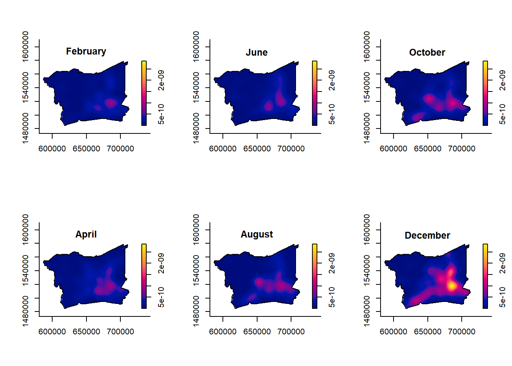
The clearest signal here is intensity, not location: the dominant hotspot is present all year at roughly the same place, but it sharpens and brightens noticeably from October through December — the same three months that had the highest raw accident counts in the EDA table earlier (394, 367, 369 respectively). Year-end isn’t just busier everywhere; it’s busier in a more spatially concentrated way at the existing hotspot rather than spread evenly across the network.
7.3 Discrete time splits: a formal significance test
STKDE is the right tool for seeing how the surface moves continuously through time, but it doesn’t on its own hand me a p-value for a specific, policy-relevant question like “is day genuinely different from night.” For that I fall back to discrete bins — the period/daytype columns from above — compared with spatstat::segregation.test(), which does have a significance test built in.
7.3.1 Building comparable point patterns
To compare the discrete-bin KDE surfaces fairly, I smooth every subset with the same bandwidth — bw.ppl() computed on the full pattern — rather than letting each subset pick its own (a smaller subset naturally wants a larger bandwidth, which would make “less smoothed because there happen to be more points here” look like a real spatial difference when it isn’t).
make_ppp <- function(sf_subset) {
co <- st_coordinates(sf_subset)
p <- ppp(co[, 1], co[, 2], window = owin_bmr)
rjitter(p, retry = TRUE, nsim = 1, radius = 5)
}
sigma_shared <- bw.ppl(acc_ppp)
day_ppp <- make_ppp(acc_sf |> filter(period == "Day"))
night_ppp <- make_ppp(acc_sf |> filter(period == "Night"))
wd_ppp <- make_ppp(acc_sf |> filter(daytype == "Weekday"))
we_ppp <- make_ppp(acc_sf |> filter(daytype == "Weekend"))7.3.2 Day vs. night
kde_day <- density(day_ppp, sigma = sigma_shared)
kde_night <- density(night_ppp, sigma = sigma_shared)
zmax <- max(kde_day$v, kde_night$v, na.rm = TRUE)
par(mfrow = c(1, 2))
plot(kde_day, main = paste0("Day (n=", day_ppp$n, ")"), zlim = c(0, zmax))
plot(kde_night, main = paste0("Night (n=", night_ppp$n, ")"), zlim = c(0, zmax))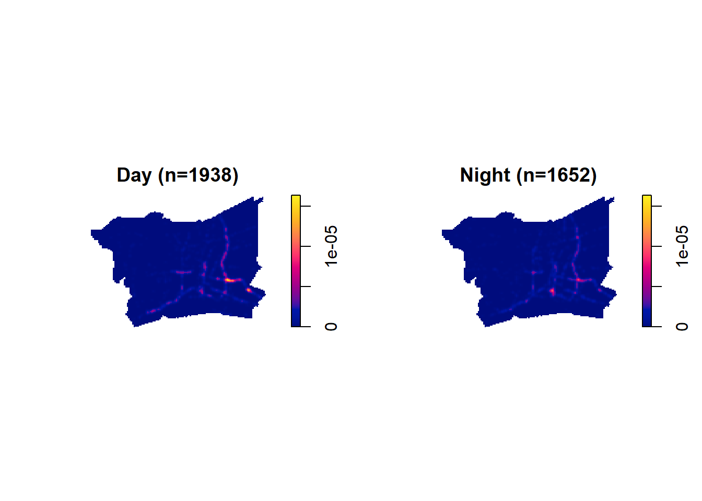
The daytime surface has one noticeably sharper, brighter hotspot at the main central interchange than the night-time surface does at the same location — daytime accidents concentrate more tightly there, consistent with peak-hour congestion at that specific junction, while night-time accidents are spread a bit more broadly along the corridor.
7.3.3 Weekday vs. weekend
kde_wd <- density(wd_ppp, sigma = sigma_shared)
kde_we <- density(we_ppp, sigma = sigma_shared)
zmax2 <- max(kde_wd$v, kde_we$v, na.rm = TRUE)
par(mfrow = c(1, 2))
plot(kde_wd, main = paste0("Weekday (n=", wd_ppp$n, ")"), zlim = c(0, zmax2))
plot(kde_we, main = paste0("Weekend (n=", we_ppp$n, ")"), zlim = c(0, zmax2))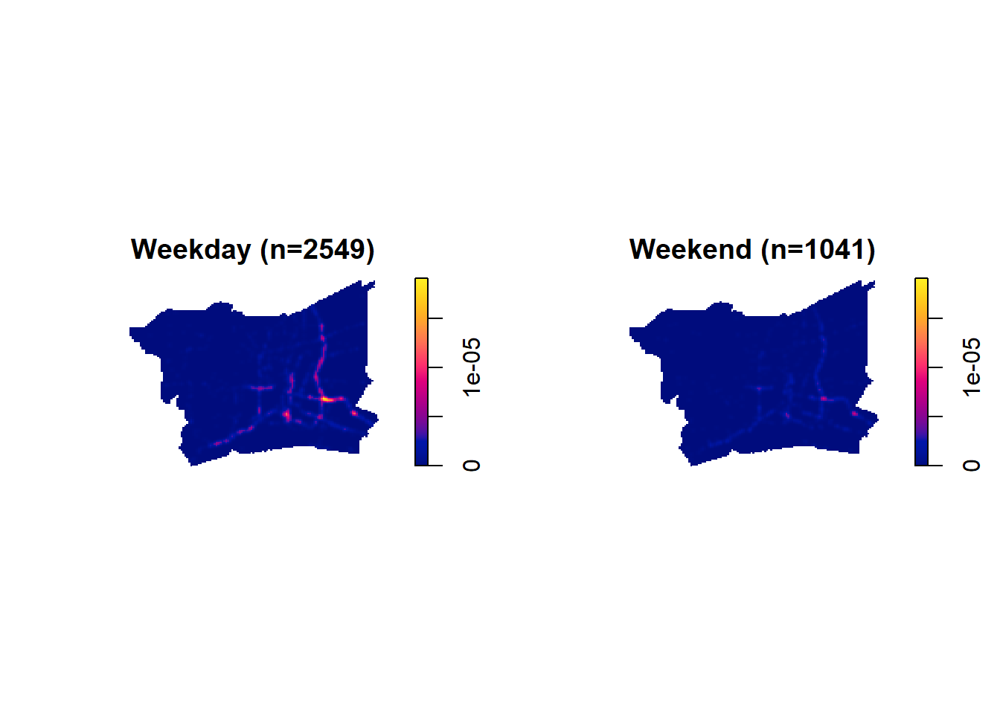
These two look far more alike than the day/night pair — same corridors light up, same interchange stands out — which by eye suggests weekday and weekend accidents don’t really relocate spatially, they just happen at different volumes (2,549 vs. 1,041, matching commuter traffic being a weekday phenomenon).
7.3.4 Formal test: is the spatial pattern actually different?
Eyeballing two KDE panels side by side is suggestive but not a statistical test. spatstat::segregation.test() is built for exactly this: given a marked point pattern (here, the mark is the time category), it tests whether the relative spatial risk surface between the two marks is significantly non-constant — i.e. whether one category is genuinely more concentrated in some places than the other, beyond what you’d expect if every point’s mark were just randomly relabelled.
seg_test <- function(sf_data, mark_col, sigma, nsim = 99, seed = 415) {
co <- st_coordinates(sf_data)
pm <- ppp(co[, 1], co[, 2], window = owin_bmr, marks = factor(sf_data[[mark_col]]))
pm <- rjitter(pm, retry = TRUE, nsim = 1, radius = 5)
set.seed(seed)
segregation.test(pm, sigma = sigma, nsim = nsim)
}
seg_period <- seg_test(acc_sf, "period", sigma = 3000)Computing observed value... Done.
Computing 99 simulated values... 1, 2, 3, 4, 5, 6, 7, 8, 9, 10, 11, 12, 13, 14, 15, 16, 17, 18, 19, 20,
21, 22, 23, 24, 25, 26, 27, 28, 29, 30, 31, 32, 33, 34, 35, 36, 37, 38, 39, 40,
41, 42, 43, 44, 45, 46, 47, 48, 49, 50, 51, 52, 53, 54, 55, 56, 57, 58, 59, 60,
61, 62, 63, 64, 65, 66, 67, 68, 69, 70, 71, 72, 73, 74, 75, 76, 77, 78, 79, 80,
81, 82, 83, 84, 85, 86, 87, 88, 89, 90, 91, 92, 93, 94, 95, 96, 97, 98,
99.
Done.seg_daytype <- seg_test(acc_sf, "daytype", sigma = 3000)Computing observed value... Done.
Computing 99 simulated values... 1, 2, 3, 4, 5, 6, 7, 8, 9, 10, 11, 12, 13, 14, 15, 16, 17, 18, 19, 20,
21, 22, 23, 24, 25, 26, 27, 28, 29, 30, 31, 32, 33, 34, 35, 36, 37, 38, 39, 40,
41, 42, 43, 44, 45, 46, 47, 48, 49, 50, 51, 52, 53, 54, 55, 56, 57, 58, 59, 60,
61, 62, 63, 64, 65, 66, 67, 68, 69, 70, 71, 72, 73, 74, 75, 76, 77, 78, 79, 80,
81, 82, 83, 84, 85, 86, 87, 88, 89, 90, 91, 92, 93, 94, 95, 96, 97, 98,
99.
Done.seg_period
Monte Carlo test of spatial segregation of types
data: pm
T = 61.451, p-value = 0.01seg_daytype
Monte Carlo test of spatial segregation of types
data: pm
T = 26.787, p-value = 0.34I used a larger, fixed sigma = 3000 m for this test specifically — segregation.test() calls relrisk() internally to estimate the spatial risk surface, and at the bw.ppl() scale (~750 m) that surface underflows to numerically unstable 0/1 values over large stretches of the study area (a spatstat warning flags this directly). A larger bandwidth is needed for a relative-risk surface to stay numerically well-behaved across an area this size than for a plain density surface — the two are estimating different things even though both use “sigma.”
7.4 Interpretation
Putting the continuous STKDE picture and the discrete formal test together, they agree and reinforce each other:
- The hour-of-day STKDE shows the hotspot’s location and shape genuinely reshaping across the 24-hour cycle, not just dimming and brightening in place — and the discrete test confirms this is statistically real: day vs. night, p = 0.01, significant spatial segregation. Where accidents happen genuinely shifts between day and night, not just how many.
- The weekday/weekend discrete test gives the opposite answer — p = 0.34, not significant. Weekday and weekend accidents share essentially the same spatial footprint; only the volume changes (2,549 vs. 1,041). I didn’t run a weekday/weekend STKDE for the same reason there’s no continuous “weekday-ness” variable to feed it — day-of-week is inherently categorical, which is exactly the kind of split discrete testing is built for and STKDE isn’t.
- The month STKDE adds a dimension neither of the day-of-week splits could show on its own: the hotspot doesn’t relocate across the year, but it does intensify and sharpen from October through December, tracking the same months with the highest raw counts.
That maps onto a sensible real-world explanation: time-of-day changes what kind of driving is happening at a given location (peak-hour congestion at specific junctions vs. free-flowing night traffic), which is a spatial effect; weekday/weekend mostly changes how much traffic uses the same road network, a volume effect rather than a spatial one; and year-end changes both — more accidents, concentrated more tightly at the existing hotspot rather than spread out.
8 Value-Added Analysis: Does Weather Affect Where Accidents Cluster?
The brief calls out weather_condition, vehicle_type and presumed_cause as optional extra angles. I went with weather, because it’s the one with the cleanest natural comparison and enough data on both sides to trust the result: of the 3,590 points, 3,263 are logged as clear and 309 as rainy (the remaining dark/foggy/other categories are too small — 18 points combined — for a meaningful spatial test on their own). presumed_cause looked tempting too (alcohol-related accidents in particular), but the largest single non-“speeding”/“other” category, alcohol, is only 39 points BMR-wide in 2022 — too thin to say anything statistically defensible about its spatial pattern specifically.
acc_sf |> st_drop_geometry() |> count(weather_condition, sort = TRUE)# A tibble: 5 × 2
weather_condition n
<chr> <int>
1 clear 3263
2 rainy 309
3 other 15
4 dark 2
5 foggy 18.1 KDE by weather condition
Unlike the day/night comparison, I let each weather subset use its own bw.ppl() bandwidth here rather than sharing one — the two groups differ in size by an order of magnitude (3,263 vs. 309), and forcing the sparser rainy-day pattern through the same tight ~630 m bandwidth tuned for the dense clear-day pattern would just render as a scatter of unconnected dots, telling me nothing about where its own hotspots are.
clear_ppp <- make_ppp(acc_sf |> filter(weather_condition == "clear"))
rainy_ppp <- make_ppp(acc_sf |> filter(weather_condition == "rainy"))
sigma_clear <- bw.ppl(clear_ppp)
sigma_rainy <- bw.ppl(rainy_ppp)
kde_clear <- density(clear_ppp, sigma = sigma_clear)
kde_rainy <- density(rainy_ppp, sigma = sigma_rainy)
par(mfrow = c(1, 2))
plot(kde_clear, main = paste0("Clear (n=", clear_ppp$n, "), σ≈", round(sigma_clear), "m"))
plot(kde_rainy, main = paste0("Rainy (n=", rainy_ppp$n, "), σ≈", round(sigma_rainy), "m"))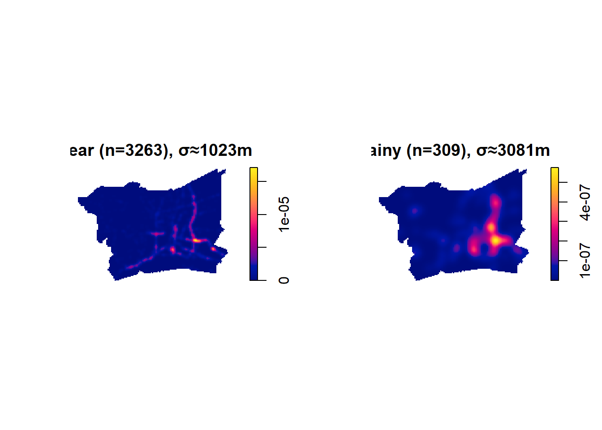
Because the two panels use different bandwidths (~630 m vs. ~2,970 m) they aren’t directly comparable by eye in the way the day/night pair was — the rainy panel is inherently smoother just from having fewer points to work with. What is comparable: clear-weather accidents trace the road network tightly, with the sharpest hotspot at the same central interchange seen throughout this document; rainy-weather accidents, even smoothed over a much wider radius, still concentrate most heavily in the east-central part of the study area rather than spreading evenly across it — a different part of the network than clear-weather’s single dominant hotspot.
8.2 Formal test
seg_weather <- seg_test(
acc_sf |> filter(weather_condition %in% c("clear", "rainy")),
"weather_condition", sigma = 3000
)Computing observed value... Done.
Computing 99 simulated values... 1, 2, 3, 4, 5, 6, 7, 8, 9, 10, 11, 12, 13, 14, 15, 16, 17, 18, 19, 20,
21, 22, 23, 24, 25, 26, 27, 28, 29, 30, 31, 32, 33, 34, 35, 36, 37, 38, 39, 40,
41, 42, 43, 44, 45, 46, 47, 48, 49, 50, 51, 52, 53, 54, 55, 56, 57, 58, 59, 60,
61, 62, 63, 64, 65, 66, 67, 68, 69, 70, 71, 72, 73, 74, 75, 76, 77, 78, 79, 80,
81, 82, 83, 84, 85, 86, 87, 88, 89, 90, 91, 92, 93, 94, 95, 96, 97, 98,
99.
Done.seg_weather
Monte Carlo test of spatial segregation of types
data: pm
T = 28.983, p-value = 0.018.3 Interpretation
segregation.test() returns p = 0.01, significant at the 5% level: clear-weather and rainy-weather accidents are not just different in volume (3,263 vs. 309, tracking the fact that it isn’t raining most of the time) but occupy meaningfully different locations within the BMR. A plausible mechanism: rain doesn’t just add slickness uniformly everywhere, it exposes drainage, visibility and road-surface weaknesses that are concentrated in particular stretches of the network — so the “risky when wet” locations aren’t simply the same “risky all the time” locations scaled down. That’s a genuinely different, actionable finding from the first-order KDE alone, which only ever showed one dominant hotspot regardless of conditions.
9 Summary
9.1 Key findings
- First-order: 2022 BMR accidents are heavily concentrated along the expressway/arterial network, with the sharpest hotspot at a central-eastern interchange in Bangkok. Both fixed and adaptive KDE agree on the location.
- Second-order: G, F, K and L function envelopes, plus a Clark-Evans R of 0.215 (p < 2.2 × 10⁻¹⁶), all confirm the clustering is statistically real and holds from the shortest to the longest spatial scales tested — this is not an artefact of random chance.
- Spatio-temporal: STKDE (
sparr::spattemp.density(), Chapter 6’s method) shows the hotspot’s location and shape reshaping continuously across the 24-hour cycle, and intensifying at the same location from October–December. The discrete formal test confirms day vs. night is a real spatial effect (segregation.testp ≈ 0.01) while weekday vs. weekend is not (p ≈ 0.34, volume-only). - Value-added (weather): rainy-weather accidents cluster in a significantly different part of the BMR than clear-weather accidents do (p ≈ 0.01), not just in smaller numbers.
9.2 Limitations
- The BMR boundary is a name-based union of six provinces, not an official metro-area polygon — some edge effects near provincial borders are possible.
- 5% of BMR 2022 accident records have no coordinates and were dropped; if missingness isn’t spatially random (e.g. concentrated in a particular reporting agency or district), the hotspots shown here could be mildly biased.
- 321 points shared exact duplicate coordinates before jittering, most likely reflecting reporting granularity (nearest landmark/km-marker) rather than true identical locations — jittering fixes the statistical degeneracy but the true precision of any individual point is uncertain.
- The day/night split (06:00–17:59 vs. 18:00–05:59) is a fixed clock-time boundary, not tied to actual daylight — a reasonable approximation at this latitude but not exact.
9.3 Data sources
- Thailand Road Accident 2019–2022 dataset — Kaggle
- Thailand ADM1 province boundaries — geoBoundaries